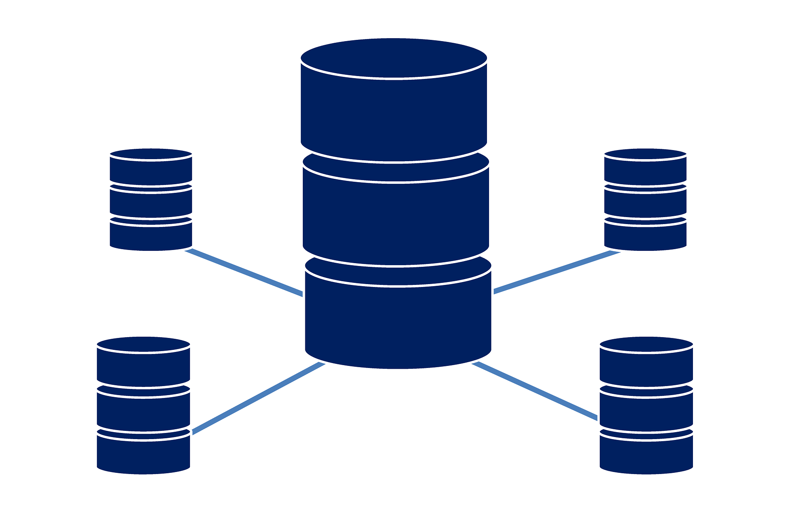
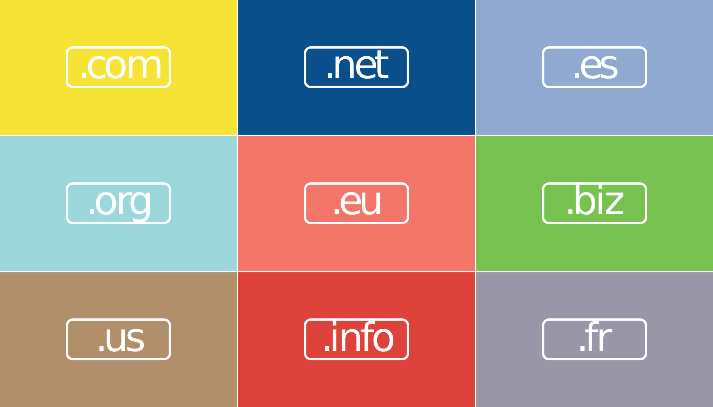

دانستنیها و تعاریف پایه به زبان ساده
اصول و مبانی راه اندازی به صورت ساده و سریع
هاست دامنه دامین میزبانی وبمطالب شرح داده شده حالت شماتیک دارند برای درک راحت توسط مبتدیان و بصورت علمی شرح داده نشدهاند.
اینترنت

بزرگترین شبکه جهانی متشکل از کامپیوترهای بهم متصل است که از طریق پروتکل (TCP/IP) باهم در ارتباط هستند. این شبکه میلیونها کامیپوتر خانگی، شرکتی، دانشگاهی، موسسهای، حکومتی و … را در خود جای داده است که باهم بیش از میلیاردها انواع اطلاعات را به اشتراک گذاشتهاند (رایگان و غیر رایگان).
وبسایت

وبسایت یا وبگاه یک مجموعه از صفحات (برگههای) وب و فایلهای دیگر مانند تصویر، فیلم، صدا و غیره است. این برگهها توسط یک وب سرور میزبانی میشوند.
وب سرور

به زبان ساده وب سرور یک کامپیوتر (مجموعهای از کامپیوترها) است که بطور دایم و مستقیم به اینترنت متصل است و اصولا دارای یک سیستم عامل مخصوص ارایه خدمات وب است. این سرور وظیفه ارائه خدمات وب را دارا میباشد.
میزبانی وب یا وب هاستینگ (web hosting)

فضایی است که توسط شرکتهای ارایه دهنده خدمات وب هاستینگ به شما داده میشود تا فایلهای وبسایت خود را بر روی آن قرار دهید تا در اینترنت منتشر گردند. به زبان ساده این شرکتها فضایی از کامپیوترهای خود را به شما اجاره میدهند تا شما فایلهای خود را در آن فضا قرار دهید و آنها فایلهای شما را به اصطلاح میزبانی کنند و با این کار وبسایت شما در اینترنت قابل دسترس است.
نام دامنه (domain name)

یک نام که برای وبگاه خود انتخاب و ثبت میکنید. این نام به فضای میزبانی شما اشاره خواهد کرد و در حقیقت آدرسی خواهد بود که به فایلهای (فضای هاست) شما اشاره میکند. با اینکار مرورگرها و دیگر برنامهها با وارد کردن نام دامنه شما به وب سایت شما هدایت خواهند شد. دامنه از دو قسمت نام (websiteman) و پسوند دامنه (ir, com, net, org و …) تشکیل شده است.
برای مثال:
www.wikipedia.org
www.google.com
www.ustart.ir
www.zistanplus.com
وب سایت ایستا (Static website)
وب سایتی است متشکل از صفحات وب (html) که روی سرور ذخیره شدهاند و به همان صورت به کاربر تحویل داده میشوند. یعنی همان فایل روی کامپیوتر کاربر نمایش داده خواهد شد بدون تغییر.
مزایا:
معایب:
وب سایت پویا (Dynamic website)
وب سایتی است دارای صفحات پویا (dynamic webpage) که توسط یک سرور کاربردی (Application Server) بر اساس درخواست کاربر ساخته میشود و تحویل او میگردد.
در حقیقت میتوان بصورت اجمالی گفت مجموعه فایلهایی است که دارای محتوا نمیباشد و محتوای آن توسط یک برنامه تولید میگردد. این محتوا میتواند در یک پایگاه داده ذخیره شده باشد و یا در یک فایل و حتی سرور دیگری. محتوا بر اساس درخواستی که از طرف کاربر (مرورگر روی کامپیوتر و یا موبایل و …) به سرور ارسال میگردد، بارگذاری میشود و به او تحویل داده میگردد.
برای مثال فرض کنید که شما یک فایل نوشتاری (مثل فایل word) با تزیینات مانند جای عکس، کادر دور، جای تیتر با فونت مخصوص و … اما بدون محتوا دارید. درست مانند سربرگ شرکتها. شما با توجه به درخواست دیگران (برای مثال پاسخ به درخواست قیمت خدمات شرکت شما) محتوای آن را پر میکنید و برای طرف میفرستید. این محتوا (مثلا قیمت) دادهها و اطلاعاتی است که شما در ذهن خود دارید و یا از بازار (مثل قیمت وسایلی که در خدمات ارایه میشود)، دیگر شرکتها و غیره تهیه میکنید. اگر شما این اطلاعات را طبقه بندی کنید (با فرض ثابت بودن قیمتها) شما یک پایگاه داده دارید که هربار برای دیگران با توجه به درخواست آنها محتوای فایل را پر میکنید و برایشان میفرستید.
وب سایت پویا نیز به همین شیوه کار میکند. یکسری فایل بصورت پیش فرض (template) روی سرور ذخیره میکند و محتوای آن را باتوجه به درخواست کاربر از پایگاه داده تهیه میکند و داخل آن قرار و سپس آن را به کاربر تحویل میدهد.
سرور کاربردی (Application Server)
یک نرم افزار است که روی کامپیوتر سرور (میزبان هاست) اجرا میگردد و درخواستها را بررسی میکنند. سپس پاسخ مربوط را به کاربر بر میگرداند.
پایگاه داده (Database)
به هر سیستمی که برای ذخیره و نگهداری (مراقبت) از دادهها و اطلاعات (از هرنوع) به کار گرفته میشود را پایگاه داده میگوییم. پایگاه داده در کامپیوتر برنامهای است که عملیات مراقبت از دادهها و اطلاعات الکترونیکی را بر عهد دارد.
چند نمونه از نرم افزارهای پایگاه داده:
mysql
mariadb
oracle DB
MS Sql
PostgreSQL
سامانه مدیریت محتوا (content management system (CMS))
برنامهای است که امکان نشر، ویرایش و مدیریت محتوا را میدهد. این برنامهها اصولا برپایه وب بوده و میتوان آن را بر روی هاست اجرا نمود.
همانطور که از نامشان پیداست به شما امکانات مدیریت هر نوع محتوایی را میدهند (نوشته، فیلم، عکس، صدا و …). این برنامهها معمولا نیازمند یک پایگاه داده برای ذخیرهسازی محتوا و یک فضا (هاست) برای نگهداری فایلها هستند. برنامههای معروف در این زمینه توانایی ساخت یک وب سایت پویا را برای شما فراهم میکنند. وبسایتهای پویایی که تواناییهای مختلفی را میتوانند داشته باشند از یک وبلاگ ساده تا یک فروشگاه اینترنتی بزرگ.
چند CMS معروف و پر استفاده:
WordPress
Joomla!
Drupal
DokuWiki
Magento
Geeklog
Prestashop
برنامههای نامبرده نوشته شده به زبان برنامه نویسی (PHP) هستند. برای دیدن لیست انواع CMSها به این لینک در ویکیپدیا مراجعه کنید.
مراحل راه اندازی وبسایت
برای راهاندازی یک وب سایت از لحاظ فنی و اجرایی شما به یک شرکت ارایه دهنده خدمات هاستینگ و دامین نیازمندید. معمولا هر شرکتی چندین نوع خدمات مختلف دارد. اما آنچه برای شما موردنیاز است تا شروع کنید یک وبهاست اشتراکی است. اشتراکی به معنی مشترک شدن وب سایت با دیگری نیست بلکه در منابع یک سیستم است. به این معنی است که بجای آنکه شما یک وب سرور کامل خریداری کنید و هزینه بالایی برای آن پرداخت کنید، شرکت بخشی از یک وب سرور را به شما میدهد.
برای درک بهتر یک کامپیوتر وب سرور را در نظر بگیرید با چند CPU چند هستهای، رم 128 گیگابایتی و چندین هارد دیسک متصل بهم به حجم چندین ترابایت. شرکت موردنظر با استفاده از سخت افزار و نرم افزار مخصوص بخشی از آن را به مشتریهایش اجاره میدهد.
برای مثال شما با خرید پلن شماره ۱ آن شرکت به یک بسته خدماتی متشکل از ۵۰۰ مگابایت فضای هاست (برگرفته از هارد وب سرور)، ۱ گیگابایت رم و ۲ هسته سیپییو دسترسی پیدا میکنید. هریک از این دسترسیها بطور مستقل است و هر کس یک فضای خاص مخصوص به خودش را دارد که به دیگری بستگی ندارد درست مانند کامپیوترهای جدا از هم اما بصورت مجازی.
پس در حقیقت شما در وبهاست اشتراکی در وبسایت یا فضای وبسایت و مشخصات آن با کسی مشترک نیستید بلکه در کل سرور بخشی را از آن خود کردهاید و کلمه اشتراک به مشترک بودن وب سرور و ارایه خدمات آن اشاره دارد.
پس از خرید دامنه و هاست به شما یک یوزر و پسورد جهت ورود به پنل کاربری شما در وب سایت شرکت مورد نظر ارایه خواهد شد. پس از ورود شما میتوانید وارد تنظیمات وب سایت خود شده و فایلهای وبسایت خود را در آنجا آپلود نمایید تا در دسترس قرار گیرند. همچنین قابلیت ساخت پایگاه داده، نوع زبان اسکریپتی و ورژن آن، انواع گزارشها، ساخت ایمیل شخصی خود و بسیاری دیگر از امکانات خواهید بود. شما برای استفاده از این امکانات نیاز به دانش خاصی ندارید و همه آنها توسط کنترل پنلها ارایه میگردد. این کنترل پنلها از همان سایت ارایه دهنده خدمات شما قابل دسترس میباشند و همگی تحت وب هستند یعنی با مرورگر اینترنت خود به آنها دسترسی خواهید داشت.